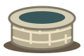
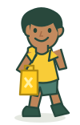

A GAME ABOUT WHAT WATER GIVES BACKTime
Time
Returned.
A shorter walk.
A whole new world.
Help Obi turn hours spent collecting water into time for school. Gather supplies, build a well, and bring possibility a little closer.
Your 10-day mission
Tap rope, coins, and water for +1 supply. Avoid mud: −2 supplies. Each day lasts 20 seconds. Spend supplies on a rain barrel (8), filter (12), then well (20). Build the well before day 10 ends. Use Tab and Enter for keyboard play.
10 days to make a difference•Click or tap to play
MEET OBIHis future is closer
than you think.
than you think.

A new beginning
◷
3 hourswaiting to be returned
CLEAN WATER CHANGES THE WHOLE STORY.
THE JOURNEY TO CLEAN WATER
Every minute matters.
DAILY WATER WALK3 hrs
YOUR JOURNEY1 / 10
SUPPLIES AVAILABLE0 items
TIME THIS DAY20s
Day in progressCollect the good. Dodge the mud.
THE COMMUNITY WELL
OBI
A LITTLE CLOSER, EVERY DAY.
Rope +1 Coin +1 Water +1 Mud −2
Campus badge unlocked
More time to learn. More room to grow.
A virtual prototype reward; no real discount or prize.